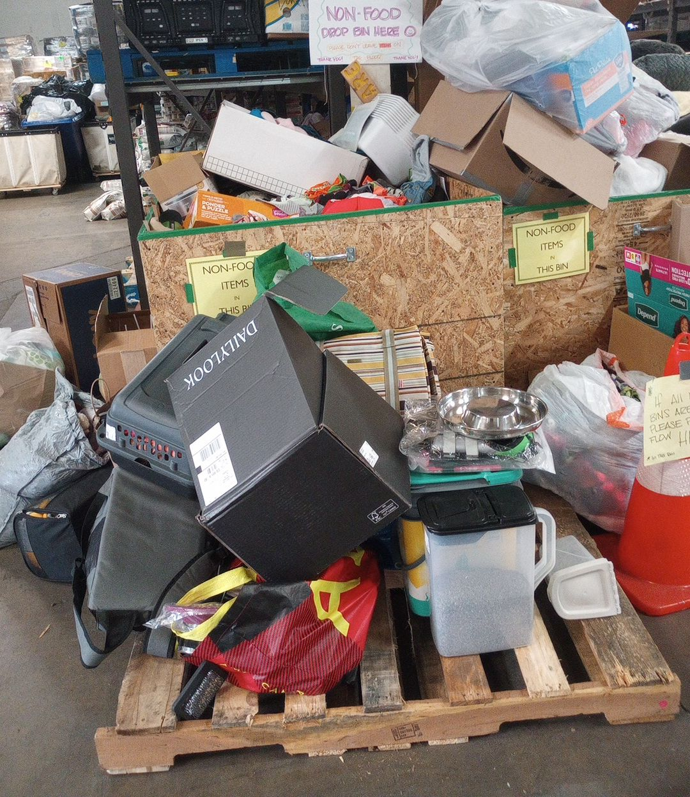
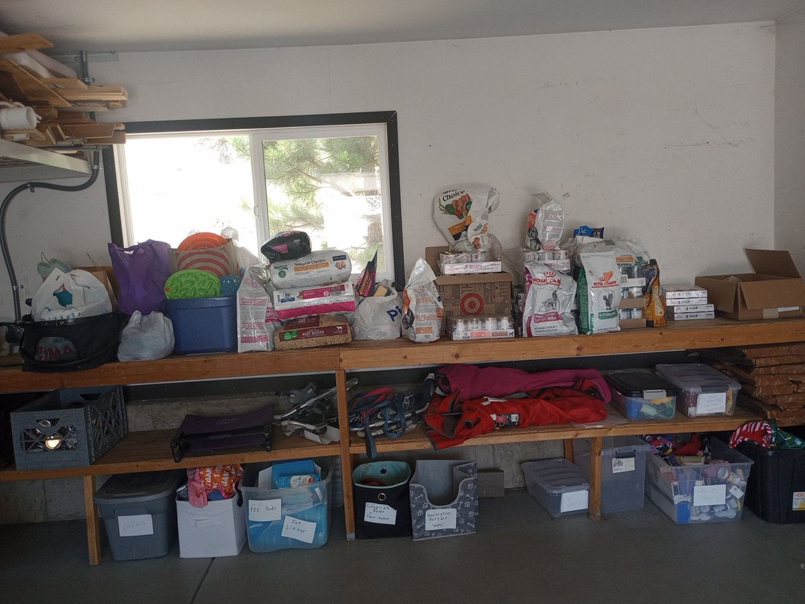
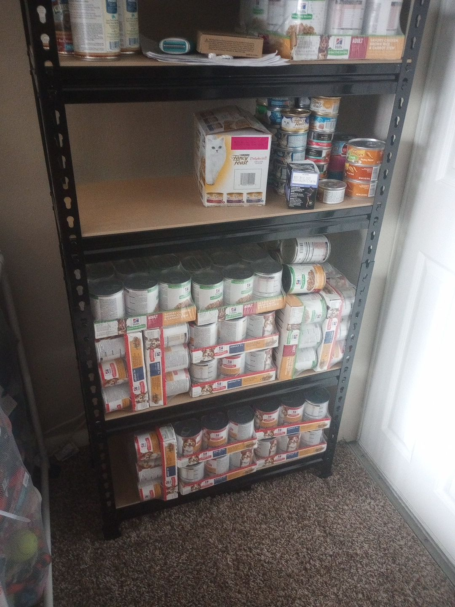
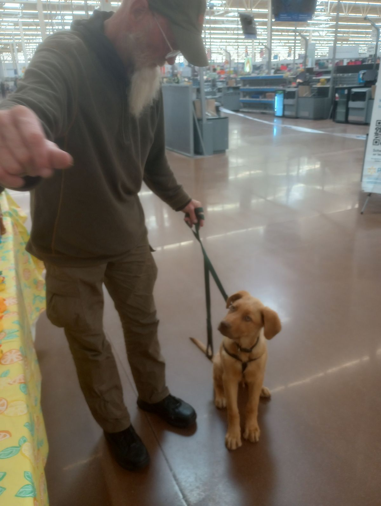
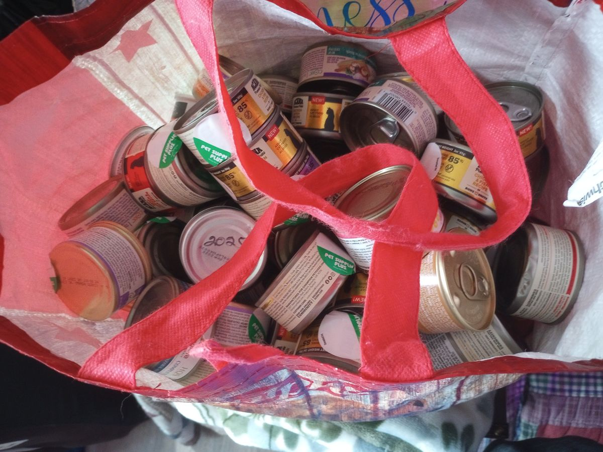
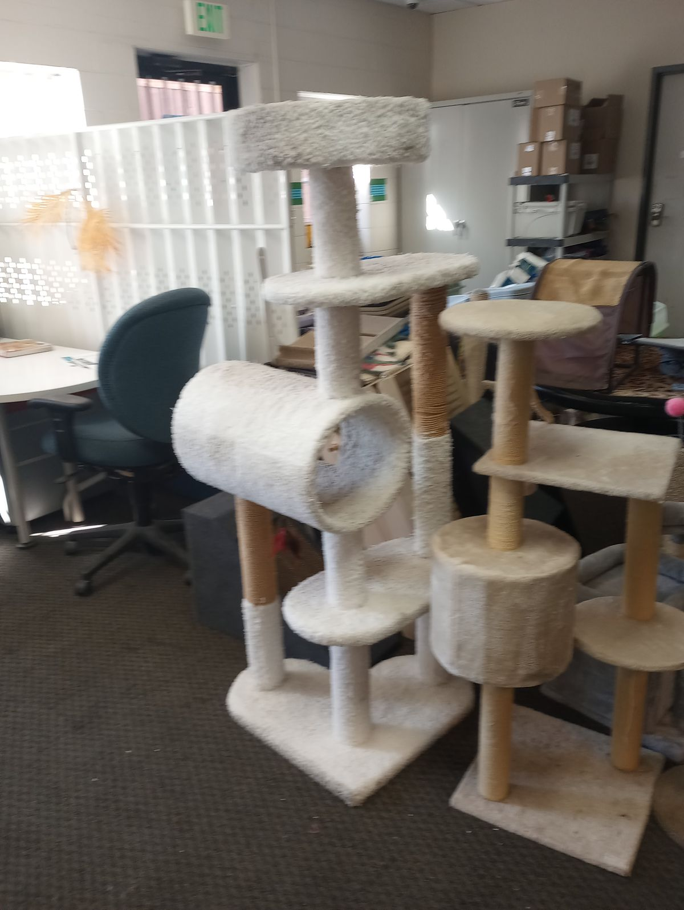
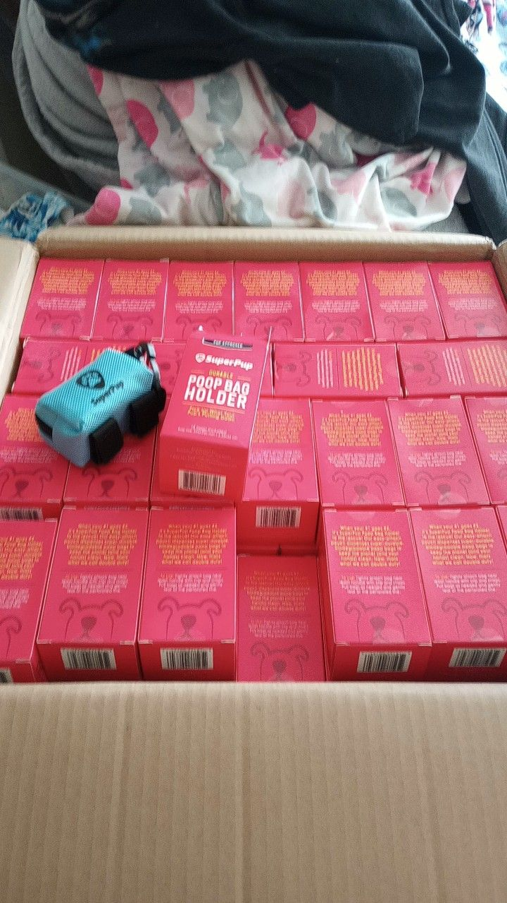
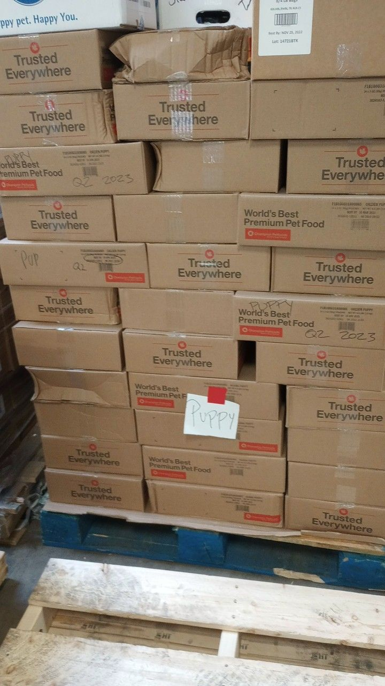

What we do
We collect donated pet food and supplies, and we give them to people who need them. That's the whole of it.
Noah's Ark Pet Bank operates out of Westminster, Colorado, and serves people across the surrounding Denver metro area. Most of the people we help are unhoused or close to it, and most of them are feeding their animal before they feed themselves. A bag of kibble is a small thing to hand someone. It is often the thing that lets them keep a companion they would otherwise have to surrender.
We are volunteer-run, and the pet bank is run out of Donna’s home in Westminster. There is no warehouse, no office, no paid staff and no overhead worth mentioning. Food comes in each week and goes back out the same way.
Our story
Donna Rangel founded Noah's Ark Pet Bank in June 2023, and the organization was recognized as a nonprofit later that year. She started it for a straightforward reason: she kept meeting people living rough who had a dog or a cat with them, and there was food assistance for the person and nothing for the animal.
The work took shape quickly. By the end of that first partial year there was a weekly collection route, a quarterly one, and a steady flow of supplies moving out to people who needed them.
Where the food comes from
-

This is where it begins. Many people donate, and many more sort and label. -

One place I pick up is out of someone's garage. Another person picks up extra from a shelter and drops it off there for me. -

My shelves getting stocked is a blessing to the community. -

A meeting place, where I drop off the dog food.
Almost everything we distribute is donated in kind, by organizations with more supply than they can use and by individuals who want to help.
- A weekly pickup — someone local who works with animal donations sets aside surplus food and supplies for us, and we go and collect it. This is the backbone of what we hand out.
- A quarterly pickup — a larger load from a Colorado pet-food charity we hold a membership with.
- Individual donors — bags, cans, leashes, bowls, and occasionally cash for something specific, like kitten formula.
We are always looking for another regular source. If your shelter, store, church or rescue has surplus pet food, we will come and collect it.
The numbers
- 2023 · half a year
- $11,525In food, supplies and cash received between June and December. Twenty-six weekly pickups in six months.
- 2024 · first full year
- $27,525Received across the year, of which $27,080 went back out to people and their animals.
- Cash, in 2023
- $125The entire cash total for the year. Everything else arrived as food and supplies, and left the same way.
If you need pet food, ask us
You do not need to prove anything to us, and there is no wrong way to ask. Send an email and tell us what animals you have and roughly where you are, and we will tell you when and where we can get supplies to you.
Ways to give
Three kinds of help, all of them useful. We are not set up to take money yet.
Food and supplies. Dry dog and cat food is what we run through fastest. We also take treats, bowls, leashes, collars, litter and kitten formula. Email us and we will arrange a drop-off or come and collect it.
Your time. Collection runs, sorting, distribution days, and help finding new donation partners. Regular hours are welcome and so is one afternoon.
A standing supply. If you run a shelter, rescue, pet store, grocery or church food bank, a recurring donation of surplus stock is the single most valuable thing anyone gives us.




What we're working toward
Taken from your own 2024 goals, in the order you listed them.
- A vanCollection runs happen in a personal car. A van would multiply how much we can pick up in a single trip.
- StorageA location with lockable cabinets, so supplies are already waiting where we distribute instead of being carried in each time.
- Three more partner churchesWorking alongside an existing human food bank is the most efficient way we have found to reach people who need us.
- A second driverOne person currently does the collecting. That is the ceiling on how much we can move.
Three questions about the photos
Short answers are fine. “Not sure” is a real answer.
Anything else
- Anything else about the photos? Goes straight to Krink, nowhere else. If you find more photos, send them any time.
Send it
Your answers are saved on this device as you type.